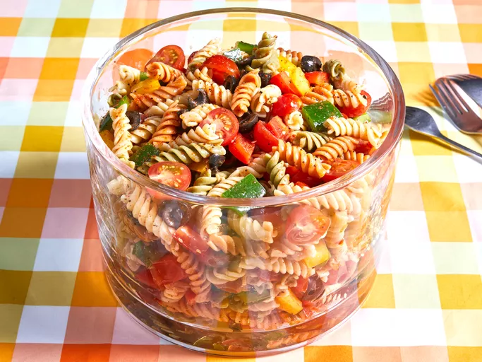

Pasta

Ingredients
- Pasta: any type of pasta you prefer (spaghetti, penne, etc.).
- Olive Oil: for sautéing and flavor.
- Garlic: minced garlic for aroma and taste.
- Vegetables: bell peppers, zucchini, or any veggies you like.
- Protein: chicken, shrimp, or tofu for added protein.
- Parmesan Cheese: grated cheese for topping.
- Herbs and Spices: basil, oregano, salt, and pepper for seasoning.
- Tomato Sauce: marinara or any sauce of your choice.
How to make Pasta step by step:
- Cook the pasta according to package instructions until al dente.
- In a large skillet, heat olive oil over medium heat.
- Add minced garlic and sauté for 1-2 minutes until fragrant.
- Add your choice of vegetables and protein, cooking until tender.
- Stir in the cooked pasta and tomato sauce, mixing well.
- Season with herbs, salt, and pepper to taste.
- Serve hot, topped with grated Parmesan cheese.
- Enjoy your delicious pasta dish!